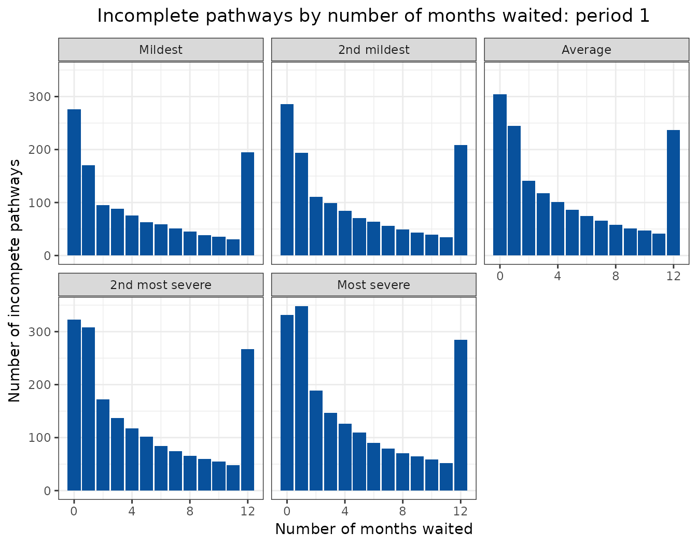

Visualising projections
animated-charts.RmdA proven effective way of presenting the outputs from waiting list projections is using animated charts. These can be embedded in many documents, including htmls and powerpoint files. This vignette shows how to generate the charts from the functions provided in the NHSRtt package.
The following libraries are needed for this vignette:
library(NHSRtt)
#> Error in get(paste0(generic, ".", class), envir = get_method_env()) :
#> object 'type_sum.accel' not found
library(dplyr)
library(ggplot2)
library(gganimate)
library(forecast)
library(tidyr)Create the input data
The data used here is dummy data. The calibration period here is two years, and the forecast period is also two years. Validation is not performed here because the purpose of this vignette is simply to show how to create animations.
max_months_waited <- 12
calibration_periods <- 24
seed <- 599Calibration
The calibration data are created and passed to the
calibrate_capacity_renege_params() function.
referrals <- create_dummy_data(
type = "referrals",
max_months_waited = max_months_waited,
number_periods = calibration_periods,
referral_values = 500:600,
seed = seed
)
incompletes <- create_dummy_data(
type = "incompletes",
max_months_waited = max_months_waited,
number_periods = calibration_periods,
max_incompletes = 500,
seed = seed
)
completes <- create_dummy_data(
type = "completes",
max_months_waited = max_months_waited,
number_periods = calibration_periods,
max_treatments = 20,
seed = seed
)
params <- calibrate_capacity_renege_params(
referrals = referrals,
incompletes = incompletes,
completes = completes,
max_months_waited = max_months_waited,
redistribute_m0_reneges = TRUE
)Projections - input data
When projecting, it is good to have a variety of projections representing more and less severe scenarios. One way of projecting is using a time series method, such as ARIMA or TBATS. Here we show how to use TBATS, along with the uncertainty that is provided by the function.
For simplicity, the calibration data is re-used as projection data. The inputs to the function are 24 months of referrals, 24 months of treatments (completed pathways) and incomplete pathways for 1 time period.
timesteps <- 24
# this function helps with repeated data manipulation; it contains the ts
# function (which turns the data into a time series - where the 12 indicates
# that is it a monthly time series), and also the tbats function, which performs
# the time series analysis on the time series
forecast_function <- function(rtt_table, number_timesteps) {
fcast <- rtt_table |>
pull(value) |>
ts(frequency = 12) |>
forecast::tbats() |>
forecast::forecast(h = number_timesteps) |>
tidyr::as_tibble()
return(fcast)
}
projection_referrals <- referrals |>
rename(
value = referrals
) |>
forecast_function(
number_timesteps = timesteps
) |>
mutate(
type = "Referrals"
)This creates a table that looks like this (only the top 15 rows are displayed). This table contains uncertainty in the projections.
| Point Forecast | Lo 80 | Hi 80 | Lo 95 | Hi 95 | type |
|---|---|---|---|---|---|
| 553.3873 | 525.5815 | 581.1932 | 510.8620 | 595.9127 | Referrals |
| 553.8094 | 525.8679 | 581.7509 | 511.0766 | 596.5422 | Referrals |
| 554.1981 | 526.1424 | 582.2539 | 511.2905 | 597.1058 | Referrals |
| 554.5562 | 526.4040 | 582.7083 | 511.5012 | 597.6112 | Referrals |
| 554.8859 | 526.6525 | 583.1193 | 511.7066 | 598.0652 | Referrals |
| 555.1896 | 526.8876 | 583.4916 | 511.9055 | 598.4738 | Referrals |
| 555.4693 | 527.1095 | 583.8292 | 512.0967 | 598.8420 | Referrals |
| 555.7270 | 527.3183 | 584.1356 | 512.2797 | 599.1743 | Referrals |
| 555.9642 | 527.5144 | 584.4141 | 512.4539 | 599.4745 | Referrals |
| 556.1828 | 527.6981 | 584.6674 | 512.6193 | 599.7462 | Referrals |
| 556.3840 | 527.8701 | 584.8980 | 512.7757 | 599.9924 | Referrals |
| 556.5694 | 528.0307 | 585.1081 | 512.9232 | 600.2156 | Referrals |
| 556.7401 | 528.1806 | 585.2997 | 513.0620 | 600.4182 | Referrals |
| 556.8974 | 528.3202 | 585.4746 | 513.1924 | 600.6024 | Referrals |
| 557.0422 | 528.4502 | 585.6342 | 513.3145 | 600.7699 | Referrals |
This is repeated for the number of treatments and the incomplete pathways.
projection_complete <- completes |>
summarise(
value = sum(treatments),
.by = period_id
) |>
forecast_function(
number_timesteps = timesteps
) |>
mutate(
type = "Treatments"
)
projection_incomplete <- incompletes |>
rename(
value = incompletes
) |>
group_by(months_waited_id) |>
group_split() |>
lapply(
forecast_function,
number_timesteps = 1
) |>
setNames(nm = 0:12) |>
bind_rows(.id = "months_waited_id") |>
mutate(
months_waited_id = as.numeric(months_waited_id)
)These inputs can be turned into scenarios. The more severe scenarios would be those with higher incomplete pathways and higher referrals combined with lower completed pathways. The less severe scenarios would be the opposite.
# most severe (severe_1)
severe_1_referrals <- projection_referrals |>
pull(`Hi 95`)
severe_1_treatments <- projection_complete |>
pull(`Lo 95`)
severe_1_incomplete <- projection_incomplete |>
select(
"months_waited_id",
incompletes = "Hi 95"
)
# 2nd most severe (severe_2)
severe_2_referrals <- projection_referrals |>
pull(`Hi 80`)
severe_2_treatments <- projection_complete |>
pull(`Lo 80`)
severe_2_incomplete <- projection_incomplete |>
select(
"months_waited_id",
incompletes = "Hi 80"
)
# average
average_referrals <- projection_referrals |>
pull(`Point Forecast`)
average_treatments <- projection_complete |>
pull(`Point Forecast`)
average_incomplete <- projection_incomplete |>
select(
"months_waited_id",
incompletes = "Point Forecast"
)
# 2nd mildest (mild_2)
mild_2_referrals <- projection_referrals |>
pull(`Lo 80`)
mild_2_treatments <- projection_complete |>
pull(`Hi 80`)
mild_2_incomplete <- projection_incomplete |>
select(
"months_waited_id",
incompletes = "Lo 80"
)
# Mildest (mild_1)
mild_1_referrals <- projection_referrals |>
pull(`Lo 95`)
mild_1_treatments <- projection_complete |>
pull(`Hi 95`)
mild_1_incomplete <- projection_incomplete |>
select(
"months_waited_id",
incompletes = "Lo 95"
)Projections - forecasts
The inputs are passed to the
apply_params_to_projections() function.
severe_1_projections <- apply_params_to_projections(
capacity_projections = severe_1_treatments,
referrals_projections = severe_1_referrals,
incomplete_pathways = severe_1_incomplete,
renege_capacity_params = params,
max_months_waited = max_months_waited
) |>
mutate(
scenario = "Most severe"
)
severe_2_projections <- apply_params_to_projections(
capacity_projections = severe_2_treatments,
referrals_projections = severe_2_referrals,
incomplete_pathways = severe_2_incomplete,
renege_capacity_params = params,
max_months_waited = max_months_waited
) |>
mutate(
scenario = "2nd most severe"
)
average_projections <- apply_params_to_projections(
capacity_projections = average_treatments,
referrals_projections = average_referrals,
incomplete_pathways = average_incomplete,
renege_capacity_params = params,
max_months_waited = max_months_waited
) |>
mutate(
scenario = "Average"
)
mild_2_projections <- apply_params_to_projections(
capacity_projections = mild_2_treatments,
referrals_projections = mild_2_referrals,
incomplete_pathways = mild_2_incomplete,
renege_capacity_params = params,
max_months_waited = max_months_waited
) |>
mutate(
scenario = "2nd mildest"
)
mild_1_projections <- apply_params_to_projections(
capacity_projections = mild_1_treatments,
referrals_projections = mild_1_referrals,
incomplete_pathways = mild_1_incomplete,
renege_capacity_params = params,
max_months_waited = max_months_waited
) |>
mutate(
scenario = "Mildest"
)Visualisations
Inputs
Stakeholders are often interested in the inputs to understand the outputs better. These sections give some useful code for styling the data used in bespoke analysis.
pal_bands <- c(
'Middle' = '#6baed6',
'Inner' = '#08519c',
'Median' = '#FFFFFF'
)
bind_rows(
projection_complete,
projection_referrals
) |>
mutate(
period_id = row_number(),
.by = type
) |>
ggplot(
aes(x = period_id)
) +
geom_ribbon(
aes(
ymin = `Lo 80`,
ymax = `Hi 80`,
fill = 'Middle'
),
alpha = 0.6
) +
geom_ribbon(
aes(
ymin = `Lo 95`,
ymax = `Hi 95`,
fill = 'Inner'
),
alpha = 0.6
) +
geom_ribbon(
aes(
ymin = `Point Forecast`,
ymax = `Point Forecast`,
fill = 'Median'
),
color = 'black',
alpha = 0.6
) +
geom_line(
aes(
y = `Point Forecast`,
group = type
),
color = 'white',
linewidth = 1
) +
theme_bw() +
theme(plot.title = element_text(hjust = 0.5)) +
facet_wrap(
facets = vars(type),
scales = "free_y"
) +
labs(
title = "Input range of completes pathways and referrals by period",
x = "Period",
y = "Volume"
) +
scale_fill_manual(
name = "Interval",
breaks = c('Middle', 'Inner', 'Median'),
values = pal_bands,
labels = c(
'Middle' = '10% to 90%',
'Inner' = '2.5% to 97.5%',
'Median' = 'Median'
)
)
Static projections
A similar set of charts can be made for the waiting list projections.
bind_rows(
mild_1_projections,
mild_2_projections,
average_projections,
severe_2_projections,
severe_1_projections
) |>
select(
"period_id", "months_waited_id", "incompletes", "scenario"
) |>
pivot_wider(
names_from = scenario,
values_from = incompletes
) |>
rename(
"Lo 80" = "Mildest",
"Lo 95" = "2nd mildest",
"Median" = "Average",
"Hi 95" = "2nd most severe",
"Hi 80" = "Most severe"
) |>
mutate(
months_waited_id = paste(
months_waited_id,
"months waited"
),
months_waited_id = factor(
months_waited_id,
levels = paste(0:12, "months waited")
)
) |>
ggplot(
aes(x = period_id)
) +
geom_ribbon(
aes(
ymin = `Lo 80`,
ymax = `Hi 80`,
fill = 'Middle'
),
alpha = 0.6
) +
geom_ribbon(
aes(
ymin = `Lo 95`,
ymax = `Hi 95`,
fill = 'Inner'
),
alpha = 0.6
) +
geom_ribbon(
aes(
ymin = `Median`,
ymax = `Median`,
fill = 'Median'
),
color = 'black',
alpha = 0.6
) +
geom_line(
aes(
y = `Median`,
group = months_waited_id
),
color = 'white',
linewidth = 1
) +
theme_bw() +
theme(plot.title = element_text(hjust = 0.5)) +
facet_wrap(
facets = vars(months_waited_id),
scales = "free_y"
) +
labs(
title = "Incomplete pathways by wait time",
x = "Period",
y = "Volume"
) +
scale_fill_manual(
name = "Interval",
breaks = c('Middle', 'Inner', 'Median'),
values = pal_bands,
labels = c(
'Middle' = '10% to 90%',
'Inner' = '2.5% to 97.5%',
'Median' = 'Median'
)
)
Animated projections
This can also be displayed as a rolling animation.
bind_rows(
mild_1_projections,
mild_2_projections,
average_projections,
severe_2_projections,
severe_1_projections
) |>
select(
"period_id", "months_waited_id", "incompletes", "scenario"
) |>
mutate(
scenario = factor(
scenario,
levels = c(
"Mildest",
"2nd mildest",
"Average",
"2nd most severe",
"Most severe"
)
),
period_id = as.integer(period_id)
) |>
ggplot(
aes(
x = months_waited_id,
y = incompletes
)
) +
geom_col(
aes(
group = period_id
),
fill = "#08519c"
) +
theme_bw() +
theme(plot.title = element_text(hjust = 0.5)) +
labs(
title = "Incomplete pathways by number of months waited: period {frame_time}",
x = "Number of months waited",
y = "Number of incompete pathways"
) +
facet_wrap(
facets = vars(scenario)
) +
transition_time(
period_id
)